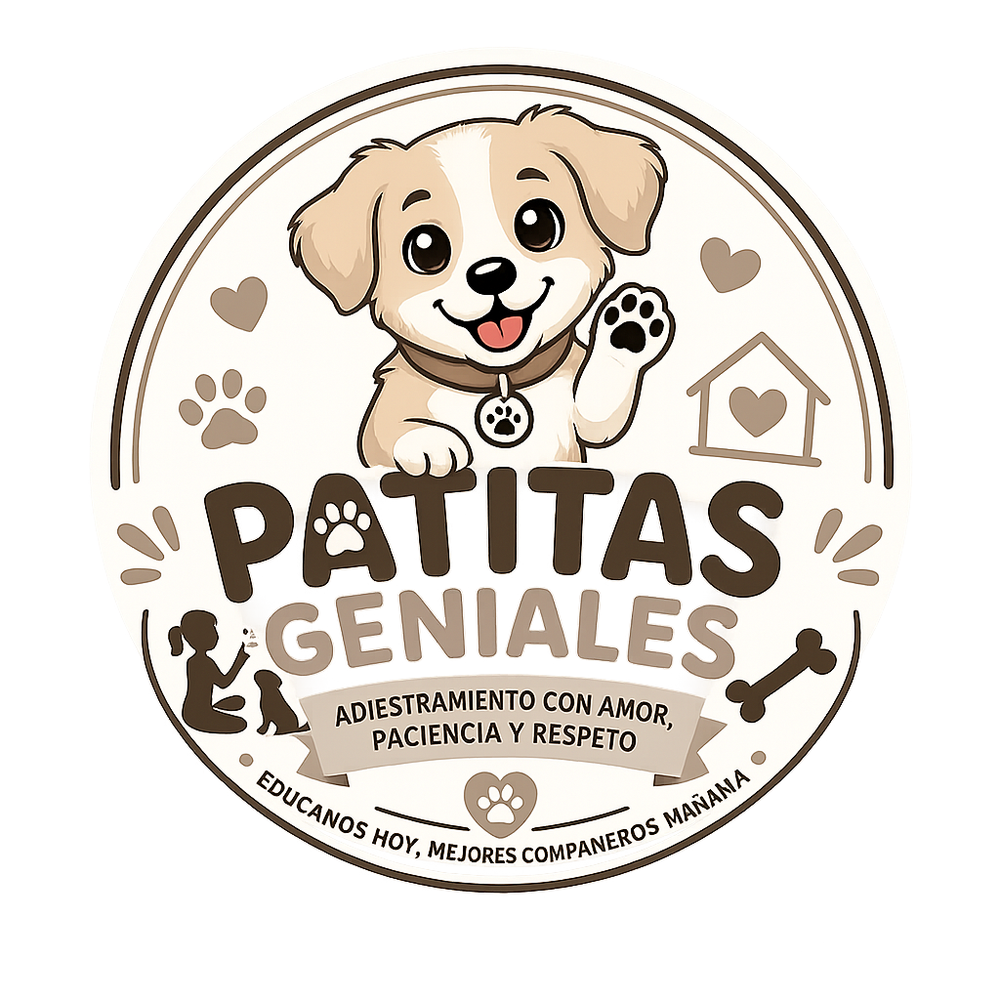

Bienvenidos a Patitas Geniales
Aprende a ser el mejor adiestrador
Patitas Geniales es una página web educativa creada para ayudar a las personas a conocer y aprender sobre el adiestramiento responsable de cachorros. Nuestro propósito es brindar información sencilla, práctica y fácil de comprender para que cada dueño pueda enseñar diferentes comandos a su mascota de una manera positiva, paciente y respetuosa.
En nuestra página encontrarás diferentes recursos diseñados para facilitar el aprendizaje, como videos educativos, explicaciones de comandos, herramientas de seguimiento y contenido especial. De esta manera, buscamos que el entrenamiento sea una experiencia agradable tanto para la mascota como para su dueño, fortaleciendo la confianza, comunicación y convivencia entre ambos.
Patitas Geniales promueve el buen trato hacia los animales y busca demostrar que el adiestramiento no debe basarse en la violencia, sino en la paciencia, la constancia, el respeto y el refuerzo positivo. Nuestro objetivo es que cada persona pueda aprender a comprender mejor a su mascota y acompañarla durante su proceso de aprendizaje.